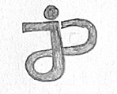
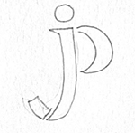
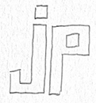
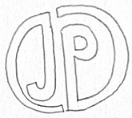
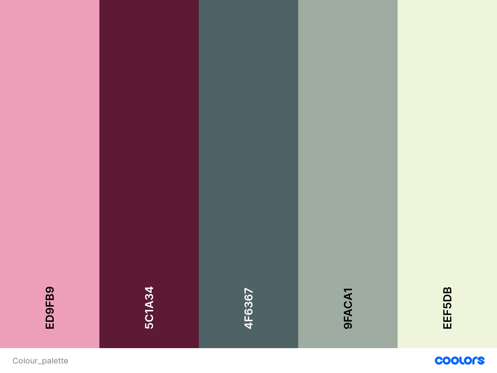

The goal of this graphic design project was to create a professional logo which I can use in my career as a UX designer.
Sketchbook. 
Adobe Illustrator. 
Below you can see my document containing my logo thumbnail sketches.
Below you can see my favourite sketches which I decided to create digitally using Adobe Illustrator.
   Below you can see concepts created with Adobe Illustrator based on my favourite sketches.
Here you can see the colour palette I created for my brand.
Below you can view my branding guide.
Below is my final logo result.